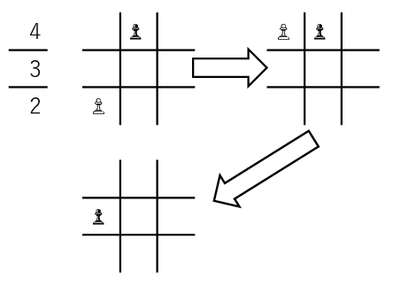
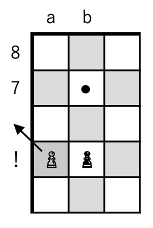

Stage 7 入力の棋譜を駒の動きに変換する
7-7 移動元の候補を絞り込む
7-6 までの生ぬるい絞り込みで候補の選定は終わりません。

別にええやろそんなムキにならんで
プレーヤーは動かす駒の絞り込みのために「駒をとった」とか「チェックメイトした」などの情報を棋譜に載せてきます。それらすべての要求に応えることなくいたずらに候補を返しては、プレーヤーの思っていた動きとは違う動かし方をしてしまう恐れがあります。
そこで、今度は candidates に残っているすべての候補に基づいて local_board という仮想的な盤面上で実際に駒を動かしてみて、
を検証しています。これらのプレーヤーの指示にしたがっていない候補はすぐに candidates から下ろします。
なんか似たようなことやった気が
ええ、6-3 で使った手法をここでも用いますよ。
~~~~~~~~~~~~~~~
まずは 7-6 で取得した候補を for ループで一つ一つみていきます。
# checking all the candidates
for reference in range(len(candidates)):
ループ内部では local_board というインスタンスに self を完璧に複製します。
# checking all the candidates
for reference in range(len(candidates)):
# copying and moving the board
local_board = Board(board=self.board, target=self.ep_target, castl_k=self.castl_k, castl_q=self.castl_q, player=self.player, turn=self.turn, s=self.s)
local_board.move(candidates[reference][FILE], candidates[reference][RANK], toFILE, toRANK, promote)
そしてこの影武者で候補の通りに駒を動かして、棋譜の要求通りになっているか確認します。
# copying the board
local_board = Board(board=self.board, target=self.ep_target, castl_k=self.castl_k, castl_q=self.castl_q, player=self.player, turn=self.turn, s=self.s)
# moving the candidate
local_board.move(candidates[reference][FILE], candidates[reference][RANK], toFILE, toRANK, promote)
~~~~~~~~~~~~~~~
まずは駒をとっているか見ます。該当は CAPTURED が True もしくは e.p. が line に入っている場合です。
# capture; searching for the opponent's piece that has disappeared
if CAPTURED or 'e.p.' in line:
# normal capturing; TO is opponent's
if fundam.PosNeg(self.board[toFILE][toRANK]) == -self.player:
pass
# en passan to Q-side
elif fundam.InSize(toRANK - 1) and fundam.PosNeg(self.board[toFILE][toRANK - 1]) == -self.player and fundam.PosNeg(local_board.board[toFILE][toRANK - 1]) == EMPTY:
pass
# en passan to K-side
elif fundam.InSize(toRANK + 1) and fundam.PosNeg(self.board[toFILE][toRANK + 1]) == -self.player and fundam.PosNeg(local_board.board[toFILE][toRANK + 1]) == EMPTY:
pass
# here no piece can capture a piece
else:
logger.info('{} does not capture any piece'.format(candidates[reference]))
del candidates[reference]
reference -= 1 # back to the for loop's head, reference increases
continue

なっっが
安心してください。全部やりますから。
~~~~~~~~~~~~~~~
まずは普通に相手の駒のいる位置に駒を動かして取ってしまうパターンです。動かす前の盤面での移動先には相手の駒がいるはずですね。したがって
# capture; searching for the opponent's piece that has disappeared
if CAPTURED or 'e.p.' in line:
# normal capturing; TO is opponent's
if fundam.PosNeg(self.board[toFILE][toRANK]) == -self.player:
pass
で確認することができます。
相手の駒をとっていることが確認されたら pass すなわち何もしないで if を離脱します。残ったものは相手の駒をとっていませんから candidates から抹消します。ですがその前に。
~~~~~~~~~~~~~~~
相手の駒の位置に移動する場合だけでなくアンパッサンも忘れずに検証してください。

相手の駒の位置に行かない場合か
アンパッサンはキングサイドとクイーンサイドに分けて判定します。
# en passan to Q-side
elif fundam.InSize(toRANK - 1) and fundam.PosNeg(self.board[toFILE][toRANK - 1]) == -self.player and fundam.PosNeg(local_board.board[toFILE][toRANK - 1]) == EMPTY:
pass
# en passan to K-side
elif fundam.InSize(toRANK + 1) and fundam.PosNeg(self.board[toFILE][toRANK + 1]) == -self.player and fundam.PosNeg(local_board.board[toFILE][toRANK + 1]) == EMPTY:
pass
いや、なんで分けんのさ
例えばこんな時は、キングサイドにアンパッサンしているか確認しようと board[toFILE - 1][toRANK] としてしまうと、インデックスが範囲を超えているのでエラーが出て強制終了させられてしまいます。
~~~~~~~~~~~~~~~
さて、ここまで残った候補は手のつけようがありません。candidates から削除します。
# here no piece can capture a piece
else:
logger.info('{} does not capture any piece'.format(candidates[reference]))
del candidates[reference]
reference -= 1 # back to the for loop's head, reference increases
continue
reference を調整して for ループを続行させます。

なんで reference 調整せなあかんの
本来 candidates の中身はリストですが、簡単のためにこう書いてみましょう。
candidates == [0, 1, 2, 3, 4, ...]
この candidates を検証していって、reference == 2 のときに「この候補は不適合だ」ということが分かったとしましょう。del を使って candidates[reference] を削除すると、
candidates == [0, 1, 3, 4, ...]
となりますね。ところで、reference をこのままにして for ループの先頭に戻ると、1 が加えられて reference == 3 となります。次は candidates[3] == 4 を確認するんですよね？もう気付きました？
3 ってまだみてなくね？
ですから、for ループの先頭に戻る前に reference から 1 引いておく必要があるんです。
~~~~~~~~~~~~~~~
お次はチェックで候補を絞り込みます。流派によっては記譜に書いた "+" の数でダブルチェック・トリプルチェックを指定してきます。ですから line の中の "+" の数に checkcount の示す盤面上でのチェックの数が届かなかったら、

チェックの数が足りねえんだよ
と怒られないように、候補を candidates から削除、reference を調整、ループ続行という手筈です。
# check
if line.count('+') > local_board.checkcounter(-self.player):
logger.info('{} is short of the number of check'.format(candidates[reference]))
del candidates[reference]
reference -= 1 # at loop's head, reference increases
continue
なんで checkcounter の引数は -self.player なの？
6-2 で散々強調したじゃないですか。checkcounter の引数はチェック
される側
のプレーヤー番号だって。
~~~~~~~~~~~~~~~
"#" で表されるチェックメイトは単純に checkmatejudge の真偽だけで判断できます。なんて簡単なんでしょう。
# checkmate
if '#' in line and local_board.checkmatejudge(-self.player) == False:
logger.info('{} does not checkmate'.format(candidates[reference]))
del candidates[reference]
reference -= 1 # at loop's head, reference increases
continue
アンパッサンは「ポーンがナナメに移動しているのに、移動先に駒がない」という状態から判断します。これまた初心者に優しいねえ。
さっきから喧嘩売っとんのかテメェシャクに触るんだよ
いえいえ、そんな滅相もない。
# en passant
if 'e.p.' in line and self.board[toFILE][toRANK] != EMPTY:
logger.info('{} does not en passant'.format(candidates[reference]))
del candidates[reference]
reference -= 1 # at loop's head, reference increases
continue
これで候補が絞り込まれました。
~~~~~~~~~~~~~~~
リターン作業に入ります。
まず残っている候補が 1 つだけの場合は、motionjudge や move の引数の形に合わせて残った候補をリターンします。あっ、ロガーは不要ですよ。
# normal return
if len(candidates) == 1:
logger.info('NORMALLY RETURNED')
return [candidates[0][FILE], candidates[0][RANK], toFILE, toRANK, promote]
一方、候補が複数あるときは最初の候補だけをリターンします。これでプレーヤーの思い通りにならなくたって、それは駒の動き方を限定しなかったその人の落ち度ですからね。一応ログでは「他に候補がある」と警告します。
# when some candidates are available
elif len(candidates) > 1:
logger.warning('THERE IS ANOTHER MOVE')
return [candidates[0][FILE], candidates[0][RANK], toFILE, toRANK, promote]
問題は候補がない場合です。プレーヤーの指定通りに駒を動かせませんので、「移動不可能」False をリターンすることになります。
# no candidates are available
else:
logger.info('THERE IS NO MOVE')
return False